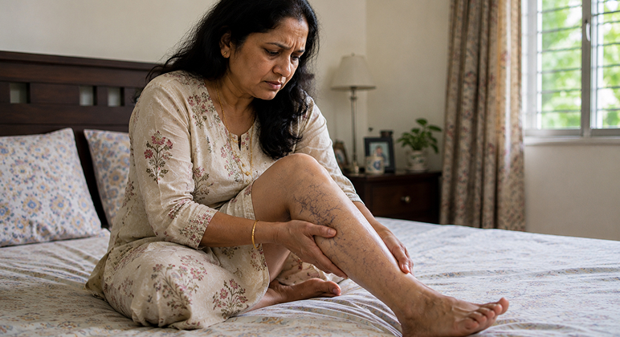
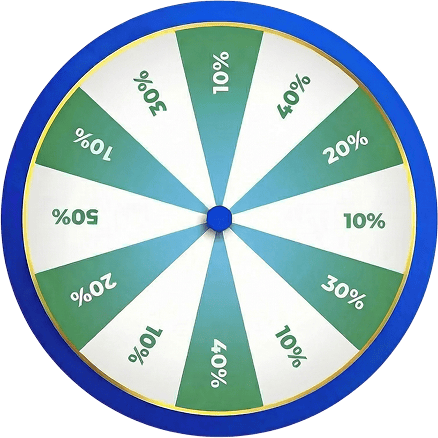

भारत का विश्वसनीय स्वास्थ्य जर्नल • ईएसटी. 2009
| दिल्ली 34°C | मुंबई 31°सेल्सियस
महिलाओं के पैरों का स्वास्थ्य • आज अपडेट किया गया • भारत संस्करण
📍 महाराष्ट्र, दिल्ली, कर्नाटक में वितरित
क्या 14 दिनों में पैरों में सूजन वाली नसों से होने वाली परेशानी को कम करना संभव है? भारत में महिलाएं नॉर्मवेइन के बारे में क्यों तेजी से बात कर रही हैं?
पैरों में भारीपन, जलन, सूजन और उभरी हुई नीली नसें न केवल एक सौंदर्य संबंधी समस्या है. इस स्थिति के कारण चलना, काम करना, पारिवारिक गतिविधियों में शामिल होना और आत्मविश्वास महसूस करना कठिन हो सकता है।

सचित्र फोटो. व्यक्तिगत लक्षण अलग-अलग हो सकते हैं
डॉक्टरों के अनुसार, भारत में 30 से 55 वर्ष की आयु की 40% से अधिक महिलाओं को पैरों में भारीपन, नसें दिखाई देने और सूजन का अनुभव होता है - विशेष रूप से गर्भावस्था के बाद और काम पर लंबे समय तक खड़े रहने के बाद. लेकिन बहुत कम लोग जानते हैं कि अपने पैरों की ठीक से देखभाल कैसे करें और समय पर इस पर ध्यान कैसे दें।
पाठक की कहानी
पुणे की 39 वर्षीय मां अंजलि हमेशा सक्रिय जीवन जीती हैं. सुबह वह बच्चों को स्कूल के लिए तैयार करती, घर की देखभाल करती, काम करती और शाम को वह पारिवारिक मामलों में लौट आती।. उसका दिन जल्दी शुरू होता था और लगभग कभी भी समय पर ख़त्म नहीं होता था.
लेकिन दूसरी बार गर्भधारण करने के बाद उन्हें अपने पैरों में अजीब सा भारीपन नजर आने लगा. पहले तो अंजलि को लगा कि यह सिर्फ थकान है. फिर उसके पैरों पर नीली नसें उभर आईं, शाम को सूजन तेज हो गई और रात में वह अक्सर जलन के कारण जाग जाती थी
"मैं सचमुच डर गई जब मेरी बेटी ने पूछा, 'माँ, आप अब हमारे साथ पार्क में क्यों नहीं खेलतीं?'"
- अंजलि, 39, पुण
उस पल, अंजलि को एहसास हुआ: उसके पैरों की समस्या न केवल उसकी उपस्थिति को प्रभावित करती है. यह आपकी ऊर्जा, आत्मविश्वास और आपके परिवार के लिए मौजूद रहने की क्षमता को छीन लेता है।

सचित्र फोटो. अंजलि फिर से अपने बच्चों के लिए एक सक्रिय माँ बनना चाहती थी।
जानना ज़रूरी है
उभरी हुई नसें सिर्फ एक कॉस्मेटिक दोष नहीं हैं
कई महिलाएं शुरू में अपने पैरों में सूजन, भारीपन और संवहनी नेटवर्क को नजरअंदाज कर देती हैं. ऐसा लगता है जैसे यह सिर्फ एक लंबे दिन के बाद की थकान है।. लेकिन समय के साथ, असुविधा बढ़ सकती है और सामान्य जीवन में बाधा उत्पन्न हो सकती है।
 भारी पैर
शाम को सूजन
जलन या जकड़न महसूस होना
नीली या बैंगनी रंग की उभरी हुई नसें
लंबे समय तक खड़े रहने के बाद दर्द होना
स्कर्ट, साड़ी या खुले कपड़े पहनने पर बेचैनी
भारी पैर
शाम को सूजन
जलन या जकड़न महसूस होना
नीली या बैंगनी रंग की उभरी हुई नसें
लंबे समय तक खड़े रहने के बाद दर्द होना
स्कर्ट, साड़ी या खुले कपड़े पहनने पर बेचैनी
वाल्व काम करते हैं, रक्त समान रूप से ऊपर की ओर बहता है
→
वाल्व कमजोर हो जाते हैं, दीवारें फैल जाती हैं, रक्त प्रवाह बाधित हो जाता है
जब पैर की नसों में रक्त संचार कम हो जाता है तो वैरिकोज नसें अधिक ध्यान देने योग्य हो सकती हैं।
प्रसंग
भारत में महिलाओं में यह समस्या इतनी आम क्यों है?
काम पर लंबे समय तक खड़े रहना, गर्म मौसम, गर्भावस्था, वजन बढ़ना, एक गतिहीन जीवन शैली, कार्यालय में लंबे समय तक बैठे रहना और वंशानुगत संवहनी कमजोरी, ये सभी पैरों की नसों पर भार बढ़ा सकते हैं।
गर्भावस्था और हार्मोनल परिवर्तन
गर्भावस्था के बाद, पैरों और रक्त वाहिकाओं पर भार बढ़ सकता है।
पैरों पर काम कर
लंबे समय तक खड़े रहने से अक्सर पैरों में भारीपन और थकान महसूस होती है।
आसीन जीवन शैली
लंबे समय तक बैठे रहने और हिलने-डुलने की कमी से परिसंचरण ख़राब हो सकता है
वंशानुगत प्रवृत्ति
यदि ऐसी ही समस्या परिवार में चलती है, तो जोखिम अधिक हो सकता है
वीडियो समीक्षा
वीडियो समीक्षा: "मुझे सीढ़ियाँ चढ़ने से डर लगता था"
"हैलो, मेरा नाम अंजलि है. पहले, शाम तक मेरे पैर इतने सूज जाते थे कि मैं अपने जूते भी बदलना नहीं चाहता था।. मुझे लगा कि यह सिर्फ उम्र और थकान है. फिर मैंने नॉर्मवेइन का उपयोग करना शुरू कर दिया. कुछ ही दिनों में मुझे अपने पैरों में सुखद ठंडक और हल्कापन महसूस हुआ।. अब मैं फिर से बच्चों के साथ टहलने जा सकता हूं और लगातार यह नहीं सोचता कि अपने पैरों को कैसे छिपाऊं"
✓ सत्यापित खरीदार
अंजलि, 39, पुणे
एक वास्तविक ग्राहक की शैली में प्रतिक्रिया. व्यक्तिगत परिणाम अलग-अलग हो सकते हैं
अंजलि को उत्पाद के बारे में कैसे पता चला?
अंजलि को नॉर्मवेइन के बारे में कैसे पता चला?
एक महिला स्वास्थ्य समूह में, अंजलि ने नॉर्मवेइन के बारे में एक चर्चा पढ़ी. कई महिलाओं ने लिखा है कि यह क्रीम फॉर्मूला उन्हें अपने पैरों की देखभाल करने में मदद करता है, जिससे लंबे दिन के बाद भारीपन, सूजन और थकान की भावना कम हो जाती है।
अंजलि ने नॉर्मवेइन को आज़माने का फैसला किया क्योंकि उत्पाद को शीर्ष पर लगाया जाता है, जटिल प्रक्रियाओं की आवश्यकता नहीं होती है और दैनिक देखभाल में आसानी से फिट बैठता है।
हेल्थ सिस्टर्स इंडिया
1,284 प्रतिभागी
⋮
चित्रण. शैलीबद्ध चैट. नाम बदल दिए गए हैं
उत्पाद का परिचय
नॉर्मवेइन - भारीपन, सूजन और दिखाई देने वाली नसों के साथ पैरों के लिए दैनिक क्रीम देखभाल


नॉर्मवेइन एक सामयिक क्रीम है जिसे दैनिक पैरों की देखभाल के लिए डिज़ाइन किया गया है।. यह हल्कापन, ठंडक और आराम का एहसास दिलाने में मदद करता है, खासकर उन लोगों को जो लंबे समय तक खड़े रहते हैं, बहुत चलते हैं या शाम को अपने पैरों में सूजन और थकान महसूस करते हैं।
✦ महिलाएं नॉर्मवेइन को क्यों चुनती हैं?
- लगाने में आसान
- चिपचिपा एहसास नहीं छोड़ता
- ठंडक का एहसास देता ह
- दैनिक देखभाल के लिए उपयुक्त
- प्राप्ति पर भुगतान के साथ ऑर्डर किया जा सकता ह
- सरल, गोपनीय पैकेजिंग में वितरित
स्लिम फिट कैसे पाएं?
